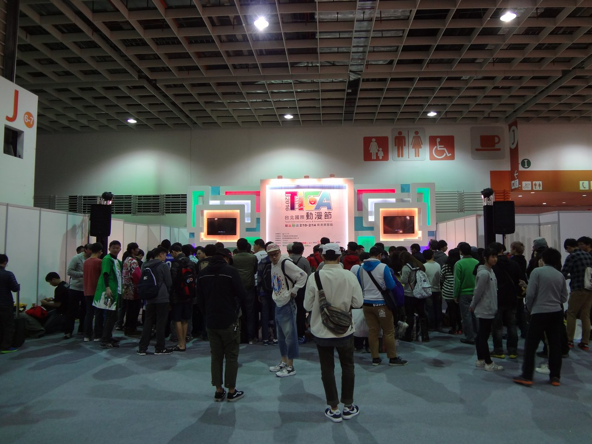

Festivals · Culture
15th Comic Exhibition Taipei 2027 (台北國際動漫節)
- Dates
- –
- Venue
- Taipei World Trade Center (TWTC) Exhibition Hall 1
- Location
- Taipei, Taiwan
- Format
- In-person
- Category
- Culture
- Industry
- Comics / anime
- Organiser
- Chinese Comic & Animation Publishers Association with Kuei-Chung (KJE) Exhibition
- Official website
- https://www.kje.com.tw/exhibition/ins.php?index_id=419
About
Dates are local to the host city (Taiwan time, UTC+8).
Topics: comics, anime, games, merchandise.
No organiser attendance figure found on the official pages fetched 24 Nov 2026. Ranked by our estimated size tier 'large' (30,000-100,000 attendees/visits), a judgement from format, venue and scale, not an official number.
Sources
- Official — https://www.kje.com.tw/exhibition/ins.php?index_id=419
- Official — https://www.twtc.com.tw/exhibition_more.aspx?id=34842&p=home
Hotels
- Shangri-La Far Eastern, Taipei — 5★ · 臺北市大安區敦化南路2段201號 · 1.6 km from the venue · Price on request
- Sheraton Grand Taipei Hotel — 5★ · 臺北市中正區忠孝東路1段12號 · 4.1 km from the venue · Price on request
- The Regent Taipei — 5★ · 臺北市中山區中山北路2段39巷3號 · 4.4 km from the venue · Price on request
- The Okura Prestige Taipei — 5★ · 臺北市中山區南京東路1段9號 · 4.4 km from the venue · Price on request
- Le Méridien Taipei — 5★ · 臺北市信義區松仁路38號 · 0.7 km from the venue · Price on request
- Grand Hyatt Taipei — 5★ · 臺北市信義區松壽路2號 · At the venue · Price on request
- 台北慕軒飯店，臻品之選 — 4★ · 臺北市大安區敦化南路一段331號 · 1.3 km from the venue · Price on request
- Hotel Cozzi Taipei Minsheng — 4★ · 臺北市中山區民生東路二段178號 · 3.6 km from the venue · Price on request
Venue
- Taipei World Trade Center Exhibition Hall 1 — Exhibition grounds · No. 5, Section 5, Xinyi Road, Taipei, Taiwan